class: center # Spatial Analysis of Urban Data ## Raster Data Processing & Satellite Image Analysis [Bayi Li](mailto:barryli081@gmail.com) <br> .toc-wrapper[ <div class="toc"> <a href="#raster-model" class="toc-item">Raster Data Model</a> <a href="#tools" class="toc-item">Tools & Libraries</a> <a href="#satellite-imagery" class="toc-item">Satellite Imagery</a> <a href="#operations" class="toc-item">Raster Operations</a> <a href="#indices" class="toc-item">Remote Sensing Indices</a> <a href="#urban-layers" class="toc-item">Heat, Light & Learned Features</a> <a href="#tutorial" class="toc-item">Hands-on with geemap</a> </div> ] --- name: raster-model .right_half[ <figure> <p>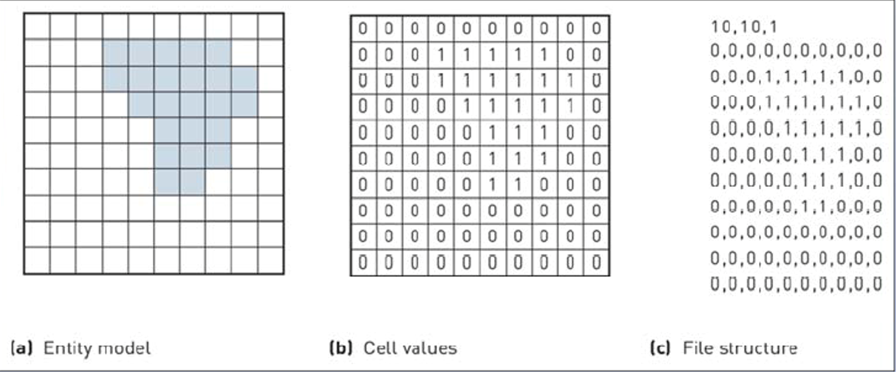</p> <figcaption>A simple raster grid: each cell holds one value.</figcaption> </figure> ] ## The Raster Data Model A **raster** represents space as a regular grid of cells (pixels). Each cell stores a numeric value that describes a property at that location. Rasters are usually stored as **GeoTIFF** (`.tif`), which embeds the CRS and extent. | Fundamental properties | | |---|---| | **Spatial resolution** | Every cell has the same width and height. It is the ground distance represented by each cell. | | **Extent** | Spatial extent describes the geographical boundaries of the raster.Presented by four bounding coordinates (xmin; xmax; ymin; ymax) | | **CRS** | How the raster's coordinates correspond to locations on Earth. | --- ### Continuous and discrete Raster .left_half[ **Continuous** rasters vary smoothly (elevation, temperature) <figure> <p>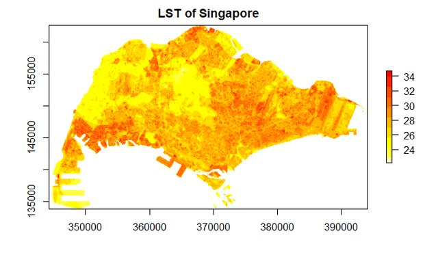</p> <figcaption>LST Raster Data (in degrees Celsius, data from Landsat 8) for Singapore on May 24, 2018.</figcaption> <figsubcaption>Source: [Yong, M. and Lim, K. H. (2020)](https://www.researchgate.net/publication/346701133_Urban_Heat_Islands_Beating_the_Heat_with_Multi-Modal_Spatial_Analysis/figures?lo=1)</figsubcaption> </figure> ] .right_half[ **Discrete** rasters hold classes (land cover, zoning) <figure> <p>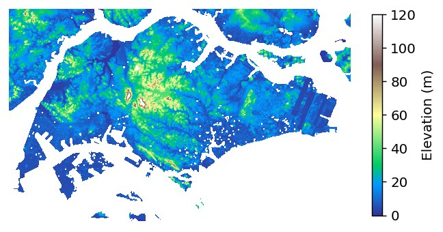</p> <figcaption>Saved locally as sg_dem.tif. This is a surface model: heights include buildings and trees.</figcaption> <figsubcaption>Data: Copernicus DEM GLO-30</figsubcaption> </figure> ] --- - **Single-band** rasters hold one value per cell (a DEM); **multi-band** rasters stack several (satellite imagery). ## Vector or Raster? .left_half[ - **Vector** describes *where things are* — best for objects with **clear boundaries** (parcels, roads, buildings). See [Week 6](vector.html). - **Raster** describes *what value each location has* — best when the phenomenon is: - **Continuous** across space - **Image-based**, captured by a sensor - **Repeated** over time at the same locations ] .right_half[ | Urban Question | Example Raster Data | |---|---| | Where can we build? | Elevation (DEM), slope | | Where is it hottest? | Land surface temperature | | How green is each district? | Satellite imagery, NDVI | | How is the city growing? | Built-up index, nighttime lights | | Where is pollution or noise worst? | Air quality, noise surfaces | | Where will it flood? | Flood depth maps | ] --- name: tools ## Tools for Raster Processing We use **Rasterio** and **NumPy** for local files, and **geemap** for cloud analysis in the hands-on practice. | Tool | Purpose | |---|---| | **[Rasterio](https://rasterio.readthedocs.io/en/stable/)** | Reading, writing, and processing raster files. Built on **[GDAL](https://gdal.org/en/stable/)**, which powers most GIS software. | | **[rasterstats](https://pythonhosted.org/rasterstats/)** | Zonal statistics: summarise raster values within vector zones. | | **[Google Earth Engine](https://developers.google.com/earth-engine/datasets)** | Cloud platform with a petabyte catalogue (Landsat, Sentinel, MODIS, and hundreds more) and built-in parallel processing. Free for research, education, and non-profit use. | | **[geemap](https://geemap.org/)** | Earth Engine in Python, with interactive maps in Jupyter notebooks. | | **[xarray](https://docs.xarray.dev/en/stable/)** / **[rioxarray](https://corteva.github.io/rioxarray/stable/)** | Labelled arrays for multi-date and climate rasters (e.g. NetCDF). | --- ## Your First Raster in Python Rasterio can read Cloud-Optimised GeoTIFFs over the internet, so this downloads only the Singapore part of the 30 m Copernicus DEM. .left_half[ ```python import matplotlib.pyplot as plt import rasterio from rasterio.merge import merge tile = ("https://copernicus-dem-30m.s3.amazonaws.com/" "Copernicus_DSM_COG_10_N01_00_E{0}_00_DEM/" "Copernicus_DSM_COG_10_N01_00_E{0}_00_DEM.tif") merge([tile.format(lon) for lon in (103, 104)], bounds=(103.60, 1.20, 104.05, 1.48), dst_path="sg_dem.tif") with rasterio.open("sg_dem.tif") as src: elev = src.read(1) plt.imshow(elev, cmap="terrain") ``` ] .right_half[ <figure> <figcaption>Saved locally as sg_dem.tif. This is a surface model: heights include buildings and trees.</figcaption> <figsubcaption>Data: Copernicus DEM GLO-30</figsubcaption> </figure> ] --- ## Raster Data Interpretation .left_half[ When inspecting a raster, always check: | Property | Question | |---|---| | **CRS** | Is it geographic (lat–lon) or projected? | | **Resolution** | What real-world distance does one cell represent? | | **Extent** | What geographic area does it cover? | | **Bands** | How many bands and what does each represent? | | **Data type** | Are values integer, float? What is the nodata value? | | **Statistics** | What are the min, max, mean, and distribution? | ] .right_half[ ```python with rasterio.open("sg_dem.tif") as src: print(src.crs, src.res) # CRS, resolution print(src.bounds) # extent print(src.count, src.dtypes, src.nodata) # bands, type, nodata band = src.read(1) print(band.min(), band.max(), band.mean()) # statistics ``` ```text EPSG:4326 (0.0002777777777777778, 0.0002777777777777778) BoundingBox(left=103.6, bottom=1.2, right=104.05, top=1.48) 1 ('float32',) None -37.0 189.07332 9.936551 ``` ] --- name: satellite-imagery ## Satellite Imagery as Raster Data Satellite imagery is a multi-band raster: each band records one range of the electromagnetic spectrum. .left_half[ | Programme | Bands | Resolution | Revisit | |---|---|---|---| | **Landsat 8/9** (NASA/USGS) | 11 | 15–100 m | 16 days | | **Sentinel-2** (ESA) | 13 | 10–60 m | 5 days | | **MODIS** (NASA) | 36 | 250–1000 m | 1–2 days | | **SRTM / ASTER** (NASA) | DEM | 30 m | static | ] .right_half[ | Band | What It Reveals | |---|---| | **Blue, Green, Red** | What the human eye sees | | **NIR** (near infrared) | Vegetation health, biomass | | **SWIR** (shortwave infrared) | Moisture, built-up surfaces | | **Thermal** | Surface temperature | ] **Match resolution to the question:** 10–30 m suits district-level greenery; building-level studies need metre or sub-metre imagery. **Free sources:** [USGS EarthExplorer](https://earthexplorer.usgs.gov/) (Landsat), [Copernicus Data Space](https://dataspace.copernicus.eu/) (Sentinel), [NASA EarthData](https://search.earthdata.nasa.gov/) (MODIS, VIIRS), or all of them through [Earth Engine](https://developers.google.com/earth-engine/datasets). --- ## Reading Sentinel-2 in Python One clear scene over Singapore (6 September 2025), read at 20 m to keep the download small: ```python import numpy as np from rasterio.enums import Resampling from rasterio.warp import transform_bounds scene = ("https://sentinel-cogs.s3.us-west-2.amazonaws.com/sentinel-s2-l2a-cogs/" "48/N/UG/2025/9/S2C_48NUG_20250906_0_L2A/") bands = ["B02", "B03", "B04", "B08", "B11"] # blue, green, red, NIR, SWIR with rasterio.open(scene + "B04.tif") as src: s2_crs = src.crs s2_bounds = transform_bounds("EPSG:4326", s2_crs, 103.60, 1.20, 104.05, 1.48) layers = [] for band_name in bands: layer, s2_transform = merge([scene + band_name + ".tif"], bounds=s2_bounds, res=20, resampling=Resampling.bilinear) layers.append(layer[0]) stack = np.stack(layers) # bands, rows, columns ``` --- ## True Colour vs. False Colour Composites .left_half[ Assigning different bands to the red, green, and blue display channels reveals different information: - **True colour** (Red, Green, Blue): what the eye sees. - **False colour infrared** (NIR, Red, Green): vegetation appears bright red. - **Urban false colour** (SWIR, NIR, Red): built-up areas stand out from vegetation. ```python blue, green, red, nir, swir = stack / 10000 # reflectance def composite(r, g, b, top=0.3): return np.clip(np.dstack([r, g, b]) / top, 0, 1) plt.imshow(composite(swir, nir, red, top=0.5)) # urban ``` ] .right_half[ <figure> <p>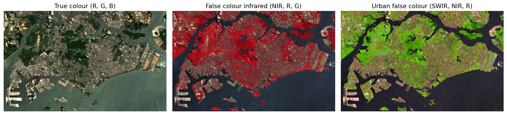</p> <figcaption>The same scene three ways: true colour, false colour infrared, and urban false colour.</figcaption> <figsubcaption>Contains modified Copernicus Sentinel data 2025</figsubcaption> </figure> ] --- name: operations ## Clipping and Masking .left_half[ ```python import geopandas as gpd from rasterio.mask import mask from rasterio.windows import from_bounds zones = (gpd.read_file("subzones.geojson") .dissolve("PLN_AREA_N").reset_index()) area = zones.query("PLN_AREA_N == 'BUKIT TIMAH'") with rasterio.open("sg_dem.tif") as src: window = from_bounds(*area.total_bounds, src.transform) by_extent = src.read(1, window=window) by_mask, _ = mask(src, area.geometry, crop=True, nodata=np.nan) land_only = np.where(elev > 0, elev, np.nan) # sea to NoData ``` Boundaries: [Master Plan 2019 Subzone Boundary](https://data.gov.sg/datasets/d_8594ae9ff96d0c708bc2af633048edfb/view), as in the vector lecture. ] .right_half[ <figure> <p>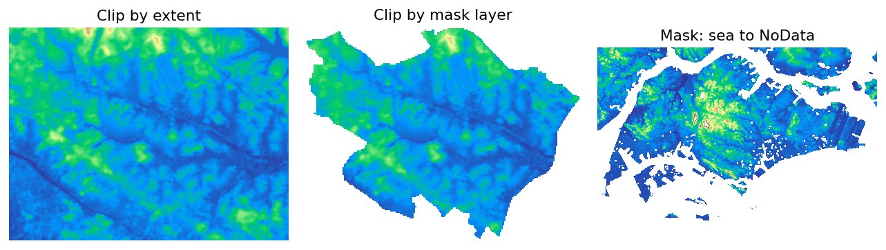</p> <figcaption>Clip by extent, clip by mask layer, and a mask over the sea.</figcaption> <figsubcaption>Data: Copernicus DEM GLO-30; URA Master Plan 2019 boundaries</figsubcaption> </figure> - **Clip by extent**: trim the raster to a bounding rectangle. - **Clip by mask layer**: trim the raster to an irregular polygon boundary. - **Mask**: set cells outside the area of interest to NoData. ] --- ## Warping and Resampling .right_half[ ```python from rasterio.warp import (Resampling, reproject, calculate_default_transform) with rasterio.open("sg_dem.tif") as src: svy21, width, height = calculate_default_transform( src.crs, "EPSG:3414", src.width, src.height, *src.bounds, resolution=30) meta = src.meta | {"crs": "EPSG:3414", "transform": svy21, "width": width, "height": height} with rasterio.open("sg_dem_svy21.tif", "w", **meta) as dst: reproject(rasterio.band(src, 1), rasterio.band(dst, 1), resampling=Resampling.bilinear) ``` ] Rasters from different sources often have different CRS, resolution, or alignment. Here we reproject the DEM to **SVY21 (EPSG:3414)**, so that cells are in metres. **Resampling methods:** - **Nearest neighbour**: preserves original values — best for categorical rasters. - **Bilinear / Cubic**: interpolates new values — best for continuous rasters. - **Majority**: takes the most common value — useful for aggregating categorical data. --- ## Slope and Terrain Analysis .left_half[ From a DEM, you can derive terrain variables useful for urban and environmental analysis: | Derivative | Description | Urban Use | |---|---|---| | **Slope** | Rate of elevation change | Buildability, drainage, landslide risk | | **Aspect** | Compass direction of slope | Solar exposure, microclimate | | **Hillshade** | Simulated illumination | Cartographic relief, visualisation | | **Viewshed** | Visible area from a point | View impact, urban design | ] .right_half[ ```python with rasterio.open("sg_dem_svy21.tif") as src: elev = src.read(1) dy, dx = np.gradient(elev, 30) # cell size: 30 m slope = np.degrees(np.arctan(np.hypot(dx, dy))) ``` <figure> <p>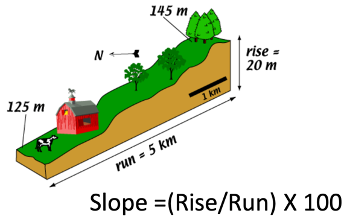</p> <figcaption>Slope as rise over run, the calculation behind slope derived from a DEM.</figcaption> </figure> ] --- ## Map Algebra and Reclassification .right_half[ <figure> <p>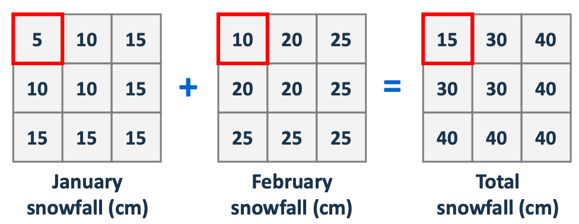</p> <figcaption>Raster overlay: combining multiple layers through cell-by-cell operations.</figcaption> </figure> ] **Map algebra** combines raster layers cell by cell using arithmetic, Boolean, or conditional expressions. Layers must share the same grid. **Reclassification** groups ranges of cell values into meaningful categories. ```python steep = slope > 15 # extract steep areas flat_high = (elev > 100) & (slope < 5) # multi-criteria terrain = np.digitize(elev, bins=[20, 50]) # 0 low, 1 mid, 2 high ``` Planning uses: - Reclassify slope into buildable and non-buildable land. - Reclassify a vegetation index into sparse, moderate, and dense vegetation. - Combine reclassified layers into a site suitability map. --- ## Zonal Statistics .right_half[ <figure> <p>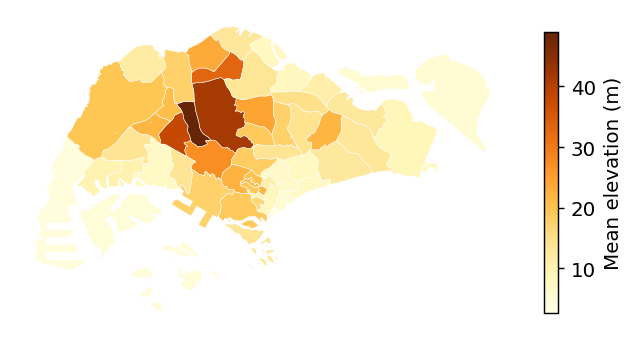</p> <figcaption>Mean elevation by planning area, summarised from the DEM.</figcaption> <figsubcaption>Data: Copernicus DEM GLO-30; URA Master Plan 2019 boundaries</figsubcaption> </figure> ] Summarise raster values within vector zones (e.g. planning areas, watersheds, census tracts). ```python from rasterstats import zonal_stats zones_svy21 = zones.to_crs(3414) stats = zonal_stats(zones_svy21, "sg_dem_svy21.tif", stats="mean", nodata=-9999) zones_svy21["elev_mean"] = [s["mean"] for s in stats] zones_svy21.plot(column="elev_mean", cmap="YlOrBr", legend=True) ``` Typical statistics per zone: **mean**, **median**, **sum**, **min**, **max**, **standard deviation**, **majority**. Zonal statistics are the main bridge between raster and vector. To convert directly, `rasterio.features.shapes` turns cells into polygons and `rasterio.features.rasterize` turns polygons into cells. --- name: indices ## Remote Sensing Indices A **spectral index** combines two or more bands into one value per pixel that highlights a specific surface property. **NDXI: N**ormalized **D**ifference **X**xx **I**ndex | Index | Formula Bands | What It Identifies | Urban Use Cases | |---|---|---|---| | **NDVI** | (NIR−Red) / (NIR+Red) | Vegetation health and density | Urban greenery, park quality, heat mitigation | | **NDBI** | (SWIR−NIR) / (SWIR+NIR) | Built-up / urban areas | Urban expansion, land-use classification | | **NDWI** | (Green−NIR) / (Green+NIR) | Water bodies | Flood mapping, water resource management | | **NDMI** | (NIR−SWIR) / (NIR+SWIR) | Vegetation moisture | Drought monitoring, fire risk assessment | --- ## NDVI: From Calculation to Interpretation .right_half[ <figure> <p>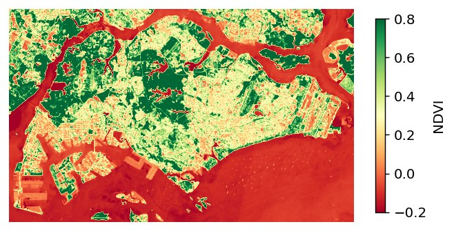</p> <figcaption>NDVI computed from the Sentinel-2 red and near-infrared bands.</figcaption> <figsubcaption>Contains modified Copernicus Sentinel data 2025</figsubcaption> </figure> ] ```python ndvi = (nir - red) / (nir + red) plt.imshow(ndvi, cmap="RdYlGn", vmin=-0.2, vmax=0.8) ``` - **NDVI ≈ 1**: dense, healthy vegetation - **NDVI ≈ 0**: bare soil, rock, or built-up surfaces - **NDVI < 0**: water bodies Healthy vegetation reflects strongly in near-infrared and absorbs red light, so its NDVI is high. --- ## NDVI: Zonal Analysis .left_half[ ```python with rasterio.open( "sg_ndvi.tif", "w", driver="GTiff", count=1, height=ndvi.shape[0], width=ndvi.shape[1], dtype="float32", crs=s2_crs, transform=s2_transform, ) as dst: dst.write(ndvi.astype("float32"), 1) stats = zonal_stats(zones.to_crs(s2_crs), "sg_ndvi.tif", stats="mean", nodata=-9999) zones["ndvi_mean"] = [s["mean"] for s in stats] print(zones.nlargest(3, "ndvi_mean")[["PLN_AREA_N", "ndvi_mean"]]) ``` ```text PLN_AREA_N ndvi_mean 20 MANDAI 0.696022 8 CENTRAL WATER CATCHMENT 0.641509 6 BUKIT PANJANG 0.586233 ``` ] .right_half[ <figure> <p>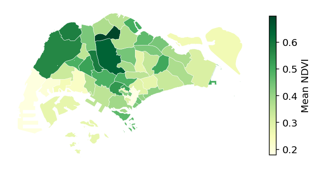</p> <figcaption>Mean NDVI aggregated to planning areas.</figcaption> <figsubcaption>Contains modified Copernicus Sentinel data 2025; URA Master Plan 2019 boundaries</figsubcaption> </figure> ] --- ## Extending NDVI Analysis .right_half[ <figure> <p>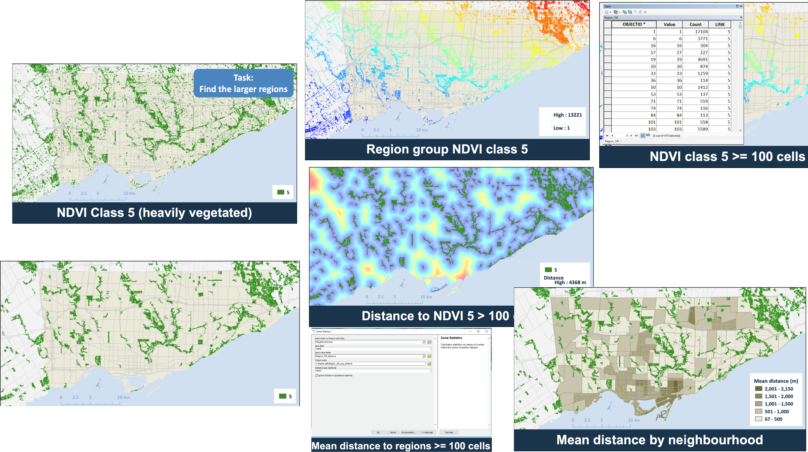</p> <figcaption>From the densest NDVI class, to large green regions, to mean distance from them by neighbourhood.</figcaption> </figure> ] NDVI can be combined with: - Population density — who has access to greenness? - Land use / zoning — which land uses are greener? - Socioeconomic data — is greenness equitably distributed? - Heat / LST data — does vegetation reduce surface temperature? --- name: urban-layers ## Land Surface Temperature (LST) .right_half[ <figure> <p>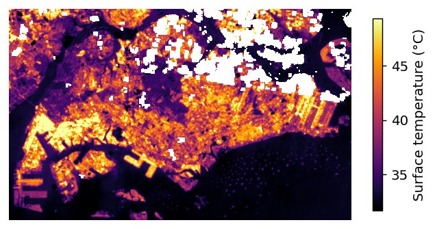</p> <figcaption>Landsat 8, 5 December 2025. White cells have no value: about 10% of Singapore's land in this product.</figcaption> <figsubcaption>Landsat 8 Collection 2 Level-2, courtesy of the U.S. Geological Survey</figsubcaption> </figure> ] Thermal bands from Landsat and other sensors can be converted to land surface temperature. ```python # Landsat Collection 2 Level-2 band ST_B10, from EarthExplorer with rasterio.open("landsat_st_b10.tif") as src: dn = src.read(1, masked=True).astype("float32") lst_c = dn * 0.00341802 + 149.0 - 273.15 # degrees Celsius ``` LST is highly relevant for urban climate studies: - **Urban Heat Island (UHI)** identification - Relationship between green space and cooling - Heat vulnerability and public health - Energy demand modelling --- ## Nighttime Light Data (NTL) .right_half[ <figure> <p>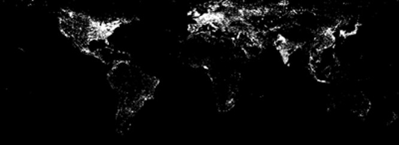</p> <figcaption>Global nighttime light composite showing urbanised regions.</figcaption> </figure> ] **Nighttime light (NTL)** data detects artificial illumination from human settlements, derived from the Defense Meteorological Satellite Program's Operational Linescan System (DMSP/OLS) and the VIIRS instrument. NTL data is powerful because: - Consistent global coverage over decades - High temporal resolution for tracking changes - Proxy for economic activity, urbanisation, and energy use - Useful for studying light pollution and its ecological impacts --- ## Beyond Bands: Learned Land Features .right_half[ <figure> <p>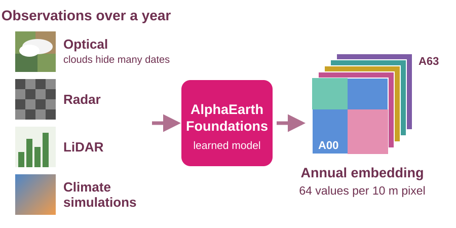</p> <figcaption>Many sensors and dates are summarised into one embedding per pixel, per year.</figcaption> <figsubcaption>Diagram for this course, based on <a href="https://deepmind.google/blog/alphaearth-foundations-helps-map-our-planet-in-unprecedented-detail/">Google DeepMind (2025)</a></figsubcaption> </figure> ] Bands and indices are **hand-designed** features. **AlphaEarth Foundations** (Google DeepMind, 2025) **learns** the features from the data: - **Fuses** optical imagery, radar, LiDAR, climate simulations, and other public data - **Sees through** persistent cloud, so maps no longer rely on a single satellite pass - Published in Earth Engine as the **Satellite Embedding** dataset: **64 bands** (`A00`–`A63`) per **10 m** pixel, annual since 2017 - **To predict** land use: sample the 64 values at labelled points → train a model (e.g. random forest) → predict every pixel **Bands are not obsolete:** embeddings are built from them, and physical or sub-annual analysis still needs them. --- name: tutorial ## Tutorial Workflow for Raster Analysis A practical raster analysis workflow, on your own computer or in the cloud: | Step | Local files (Rasterio, NumPy) | Cloud (geemap, Earth Engine) | |---|---|---| | **Inspect** extent, CRS, resolution, bands | `src.crs`, `src.res`, `src.bounds` | `image.bandNames()`, `image.projection()` | | **Symbolise** to understand the values | `plt.imshow(array, cmap="terrain")` | `Map.addLayer(image, vis, "name")` | | **Clip or mask** to your study area | `mask(src, shapes, crop=True)` | `image.clip(area)`, `image.updateMask(mask)` | | **Transform** with an index or reclassification | `(nir - red) / (nir + red)` | `image.normalizedDifference(["B8", "B4"])` | | **Summarise** with zonal statistics | `zonal_stats(zones, "raster.tif")` | `geemap.zonal_stats(image, zones)` | **Document** your assumptions about resolution, CRS, thresholds, and data sources. --- ## Hands-on: NDVI with geemap (1 of 3) **Setup:** register a [Google Cloud project](https://console.cloud.google.com/earth-engine) for noncommercial Earth Engine use, run `pip install geemap` in your virtual environment, and work in a **Jupyter notebook**. ```python import ee import geemap ee.Authenticate() # opens a browser, first time only ee.Initialize(project="your-cloud-project-id") # use your own project ID region = ee.Geometry.Rectangle([103.60, 1.20, 104.05, 1.48]) cloud_score = ee.ImageCollection("GOOGLE/CLOUD_SCORE_PLUS/V1/S2_HARMONIZED") s2 = (ee.ImageCollection("COPERNICUS/S2_SR_HARMONIZED") .filterBounds(region).filterDate("2024-01-01", "2025-01-01") .linkCollection(cloud_score, ["cs_cdf"]) .map(lambda img: img.updateMask(img.select("cs_cdf").gte(0.6))) .median().clip(region)) ndvi = s2.normalizedDifference(["B8", "B4"]).rename("NDVI") ``` **Cloud Score+** (`cs_cdf`) masks the cloudy pixels in each scene; the **median** combines the rest into one cloud-free 2024 image. --- ## Hands-on: NDVI with geemap (2 of 3) Display the results on an interactive map: ```python ndvi_vis = {"min": -0.2, "max": 0.8, "palette": ["red", "yellow", "green"]} Map = geemap.Map(center=[1.35, 103.82], zoom=11) Map.addLayer(s2, {"bands": ["B4", "B3", "B2"], "min": 0, "max": 3000}, "True colour") Map.addLayer(s2, {"bands": ["B8", "B4", "B3"], "min": 0, "max": 5000}, "False colour") Map.addLayer(ndvi, ndvi_vis, "NDVI") Map.add_colorbar(ndvi_vis, label="NDVI") Map ``` Switch the layers on and off, and zoom in. Does high NDVI match the vegetation you can see in true colour? --- ## Hands-on: NDVI with geemap (3 of 3) Which planning areas are the greenest? Use the same `subzones.geojson` as before: ```python import geopandas as gpd import pandas as pd zones = gpd.read_file("subzones.geojson").dissolve("PLN_AREA_N").reset_index() zones_ee = geemap.gdf_to_ee(zones[["PLN_AREA_N", "geometry"]]) geemap.zonal_stats(ndvi, zones_ee, "ndvi_by_area.csv", stat_type="MEAN", scale=10) result = pd.read_csv("ndvi_by_area.csv").sort_values("mean", ascending=False) print(result[["PLN_AREA_N", "mean"]].head()) ``` Earth Engine computes everything in the cloud: nothing is downloaded except the final table. --- ## Hands-on: Your Turn Adapt your notebook to answer a new question: - **Built-up areas**: swap NDVI for NDBI with `s2.normalizedDifference(["B11", "B8"])`. Which planning areas are the most built-up? - **Heat**: use `LANDSAT/LC09/C02/T1_L2`, band `ST_B10`, with a scale of 0.00341802 and an offset of 149. Expect some gaps. Are the greenest areas the coolest? - **Learned features**: load `GOOGLE/SATELLITE_EMBEDDING/V1/ANNUAL` and display three of its 64 bands. What patterns can you see? For each answer, **document** your date range, cloud threshold, `scale`, and zones. --- ## Key Takeaways - **Raster data** represents space as a grid of cells. Check **resolution, extent, bands, and CRS** before any analysis. - **Core operations** (clip, mask, reproject, map algebra, reclassify) turn raw grids into planning layers such as slope and buildable land. - **Zonal statistics** bridge raster and vector by summarising surfaces per planning area. - **Indices and derived layers** (NDVI, NDBI, LST, nighttime light) measure greenery, built-up growth, heat, and activity; **learned embeddings** can stand in for them in prediction models. - **Images are rasters too**: in Week 11, [computer vision](cvurban.html) turns street-view pixels into indicators such as the Green View Index. - **Tooling**: Rasterio and NumPy for local files; geemap with Google Earth Engine for cloud analysis. --- ## Reading Materials - Kang-tsung Chang and Carl M. Chang (2019), *Introduction to Geographic Information Systems*, 9th Edition, Chapter 12 (Raster Data Analysis) - USGS Landsat Missions: https://www.usgs.gov/landsat-missions/ - Copernicus Sentinel: https://dataspace.copernicus.eu/ - Google Earth Engine Data Catalog: https://developers.google.com/earth-engine/datasets - Rasterio Documentation: https://rasterio.readthedocs.io/en/stable/ - Geemap Tutorials: https://geemap.org/ - [AlphaEarth Foundations, Google DeepMind](https://deepmind.google/blog/alphaearth-foundations-helps-map-our-planet-in-unprecedented-detail/) - Brown et al. (2025), [*AlphaEarth Foundations: An embedding field model for accurate and efficient global mapping from sparse label data*](https://arxiv.org/abs/2507.22291) - [Satellite Embedding Dataset](https://developers.google.com/earth-engine/datasets/catalog/GOOGLE_SATELLITE_EMBEDDING_V1_ANNUAL) - [Earth Engine Access](https://developers.google.com/earth-engine/guides/access) - [rasterstats Documentation](https://pythonhosted.org/rasterstats/) --- ## This Week: Final Project Tasks Complete both tasks **in class this week**, through the form shared by QR code: 1. [Form your group](final.html#group): 3–4 people and a group alias 2. [Choose your topic](final.html#topic): rank three of the nine primary domains Topics are decided by **submission time**, so agree on your three options before you scan the QR code. --- <xL>Continue with Lecture: </xL><button onclick="window.location.href='spdeng.html'">Go to Spatial Data Integration and Feature Engineering</button> <xL>Back to course menu: </xL><button onclick="window.location.href='index.html'">Go Back to Menu</button>